自作マイコン用CPU、RISC-K
2022-09-27
RISC-V をベースに、16bit 向けに小細工をしました。
レジスタ
| 機能 | 保持 | ||
|---|---|---|---|
| x0 | zero | ゼロ固定 | - |
| x1 | ra | 戻りアドレス | ✕ |
| x2 | sp | スタック・ポインタ | 〇 |
| x3 | gp | グローバル・ポインタ | 〇 |
| x4-7 | s0-3 | 保存レジスタ | 〇 |
| x8-11 | t0-3 | 一時レジスタ | ✕ |
| x12-15 | a0-3 | 引数・返値 | ✕ |
| - | pc | プログラムカウンタ | - |
| - | csr | コントロール＆ステータスレジスタ | - |
命令セット

r[x0] はレジスタ x0 の値を、m[xx] はメモリの xx 番地の値を意味します。
i(x) は x bit の即値を、is は符号拡張する即値を意味します。
符号拡張とは
4bit の符号付き整数を 8bit にしたい場合、正の数は 0 を埋めればいいですが、負の数は 1 を埋める必要になります。符号付き整数の符号は、最上位 bit で表されるので、一般に、符号付き整数の bit 長を伸ばしたい場合、最上位ビットで埋める必要があります。これが符号拡張です。
| 1 | 0000 | 0001 |
| 1 | 0001 | |
| 0 | 0000 | |
| -1 | 1111 | |
| -1 | 1111 | 1111 |
RISC-K では RISC-V に倣って、命令の即値の最上位 bit の位置を揃えることで、符号拡張のハードウェアを単純にします。
レジスタ演算
add rd, rs1, rs2
r[rd] = r[rs1] + r[rs2]
| 演算 | |
|---|---|
| + | add |
| - | sub |
| ^ | xor |
| | | or |
| & | and |
| < | less than |
| < | less than unsigned |
| >> | shift left logical |
| >> | shift left arithmetic |
| << | shift right logical |
| << | shift right arithmetic |
即値演算
addi rd, rs1, is(8)
r[rd] = r[rs1] + is(8)
16bit で演算したい場合は、即値ロードをした後に演算をする。
即値ロード
li rd, i(16) (Load Immidiate)
r[rd] = i(16)
メモリアクセス
l rd, rs1, is(12)
r[rd] = m[r[rs1]+is(12)]
s rs1, rs2, is(12)
m[r[rs1]+is(12)] = r[rs2]
rs1 を zero レジスタとすることで、絶対参照ができる。
12bit より広い範囲を参照したい場合は即値ロードを使う。
条件分岐
jie rs1, rs2, is(12) (Jump If rs1 Equal rs2)
jil rs1, rs2, is(12) (Jump If rs1 is Less than rs2)
PC += is(12)
ALU で減算 r[rs1] - r[rs2] を行い、その結果で分岐判定をします。
分岐先アドレスは、現在の PC に即値を足したアドレスです。
即値は符号拡張するので、マイナスのアドレスにも分岐できます。
分岐条件は、
一致（r[rs1] == r[rs2]）
演算結果の全 bit の nor を取る（全部 0 のときだけ 1）
未満（r[rs1] < r[rs2]）
演算結果の符号 bit（負の場合は 1）
ジャンプ
j rd, i(16) (Call)
r[rd] = PC + 1
PC = i(16)
jr rd, rs1, is(12)
r[rd] = PC + 1
PC = r[rs1] + is(12)
戻りアドレスを rd に保存し、PC を即値にする。
分岐とジャンプの違いについて
分岐は関数内での if 文に、ジャンプは関数呼び出しに対応する。
if の分岐先は近いアドレスであるが、関数呼び出しは遠いアドレスであることも多い。
また、関数呼び出しは戻りアドレスを記憶しておく必要がある。
条件分岐はコンパイラで相対位置を決める。
関数呼び出しはリンカが絶対位置を決める。
割り込み
intr xxxxx
割り込みフラグを設定する。
サブルーチン
| ASM | |
|---|---|
| subi sp sp 5 | スタックポインタを減算し、スタックを確保 |
| store s0 0(sp) | レジスタをスタックに退避 |
| store s1 1(sp) | |
| store s1 2(sp) | |
| store s1 3(sp) | |
| store ra 4(sp) | リターンアドレスも退避 |
| loadi a0 334 | 引数をレジスタにセット |
| レジスタが足りなければスタックにセット | |
| jal | サブルーチンにジャンプ |
| : | |
| : | サブルーチンの処理 |
| : | |
| load ra 0(sp) | レジスタを復元 |
| load ra 1(sp) | |
| load ra 2(sp) | |
| load ra 3(sp) | |
| load ra 4(sp) | リターンアドレスを復元 |
| addi sp sp 5 | スタックポインタを加算 |
| jr ra | PC を戻す |
割り込み処理
| ASM | |
|---|---|
| subi sp 16 | 全てのレジスタをスタックに退避 |
| store x1 0(sp) | |
| : | |
| store x15 14(sp) | |
| jal | ジャンプ |
| : | |
| : | 割り込み処理を行う |
| : | |
| load x1 0{sp} | レジスタを復元 |
| : | |
| load x15 14(sp) | |
| jr ra | PC を戻す |
割り込み
実行時エラー
割り込みとしてエラー処理を行う。
エラーコードを状態レジスタにセットし割り込み。
- スタックオーバーフロー
- メモリの範囲外アクセス
メモリ空間
| Addr | Function |
|---|---|
| 0000 ~ 000F | レジスタ |
| IO | |
| VRAM | |
| EEPROM | |
| RAM |
レジスタ
- 実体としては、SRAM の一部分
- 4bit でアクセスする → ISA でビットを節約できる
IO
IO は SRAM とは別に Dual Port SRAM または DFF の IC を使って実装する。
このアドレスへのメモリアドレスは、別のデバイスにスイッチする。
各 IO に必要なパラメタ数がわからないので、仮です。
GPIO
ADC
DAC
PWM
UART
SPI
I2C
VRAM (Dual access SRAM)
表示の候補として、
- 300 x 400 画素 : RGB 4 段階 (6bit)
- 300 x 400 画素 : 白黒 2 段階 (1bit)
- テキスト表示（フォントを EEPROM に置いておく）
ROM (EEPROM)
RAM (SRAM)
回路

ID
命令デコーダ。機械語命令をもとに、マルチプレクサを切り替えて、データの経路を決める。
動作：
4 クロックで 1 命令を実行する。
それぞれのステージで何をするか
- PC のカウントアップ
- メモリを読み出し、RS1 に記録
- メモリを読み出し、RS2 に記録
- メモリに書き込み
| ALU | S2 | 0.ADR | 1.ADR | 2.ADR | DIN | |
|---|---|---|---|---|---|---|
| add | Func | RS2 | R RS1 | R RS2 | W RD | ALU |
| addi | Func | IMM | R RS1 | - | W RD | ALU |
| l | ADD | IMM | R RS1 | R ALU | W RD | RS2 |
| s | ADD | IMM | R RS1 | R RS2 | W ALU | RS2 |
| li | - | - | - | - | W RD | IMM |
| be | SUB | RS2 | R RS1 | R RS2 | - | - |
| bl | SUB | RS2 | R RS1 | R RS2 | - | - |
| j | ADD | - | - | - | W RD | PC |
| jr | ADD | IMM | R RS1 | - | W RD | PC |

タイミングチャート：
- PC のカウントアップ
S1 のロード
アドレスに RS1 をセットします。
S2 のロード
ALU の 2 つの入力を S1,S2 レジスタにセットします。
- 実行
即値デコード：

PFC
プログラムフローコントローラ。
ジャンプ命令、分岐命令、割り込みによる、プログラムの流れの変化を処理する。

動作：
| 次の PC | |
|---|---|
| - | PC+1 |
| jie | ALU=0 ? PC+IMM : PC+1 |
| jil | ALU>0 ? PC+IMM : PC+1 |
| j | IMM |
| jr | ALU |